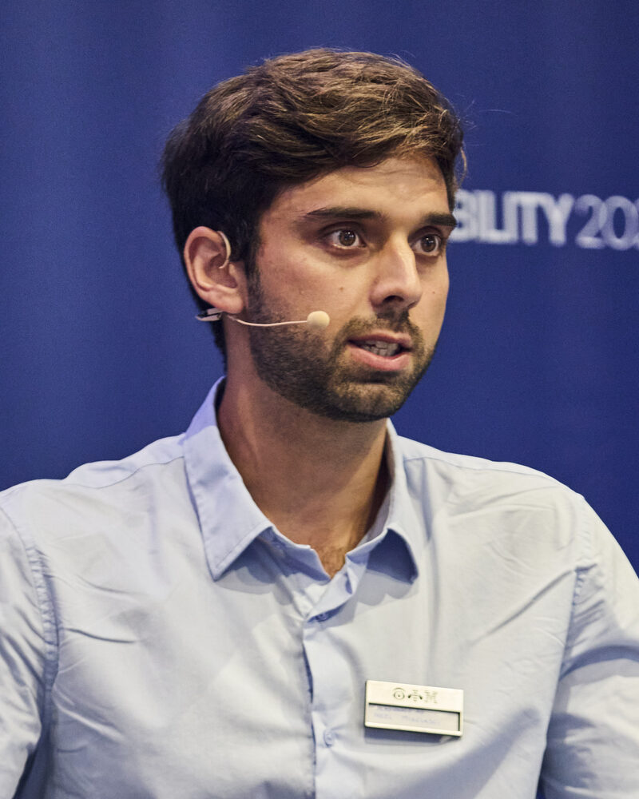

Quantum Computing PhD Student
Neel Misciasci
Volkswagen Group & Technical University of Munich
Advisor: Prof. Christian B. Mendl
I work at the intersection of quantum computing and high-performance computing. My research develops classical numerical methods, based on tensor networks and Riemannian optimization, that compress quantum simulation circuits into shallow, hardware-native circuits that today's quantum computers can run.
I am motivated by industrial applications such as battery and magnetic materials. Before my PhD, I worked on machine learning for materials science and physics.
- Quantum simulation
- Tensor networks
- Quantum circuit compression
- Machine learning
- High-performance computing

Projects
Research papers and selected projects from my studies. Drag to browse, click a card for details.